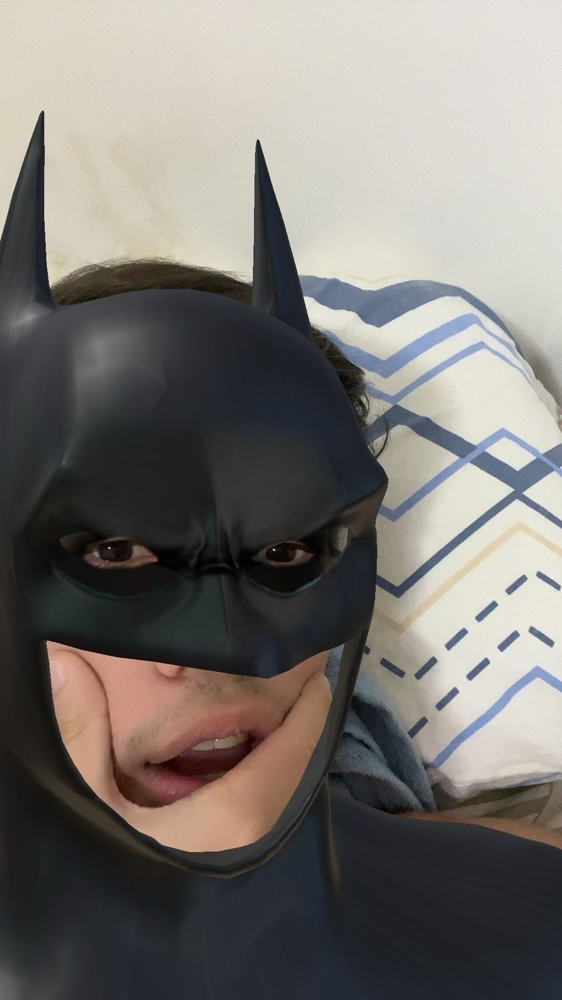

Oi meu amor
Antes de começar
Você conhece essa pessoa?
Você conhece essa pessoa?
Olhe bem pra essa:
Obra prima
Espere...
É a minha namorada que está acessando essa página?
Sim, Você mesma Letticia.
Se tudo funcionar como o programado você deveria estar ouvindo uma música de fundo.
Quando estiver ouvindo-a, clique no botão.
Bom, então vamos lá...
eu queria que você soubesse de algumas coisas.
Fiz isso para você.
você merece muito mais que isso, mas eu quis fazer do meu jeito algo do meu coração.
As vezes é difícil imaginar...
a gente ja se conhecia, mas você entrou na minha vida de vez á alguns meses e fez ela ficar muito melhor sem esforço...
e conseguiu me conquistar cada vez mais com o seu jeito...
e eu quero estar ao seu lado para o resto da minha vida.
De coração mesmo.
Eu quero mostrar isso para você.
"Posso?"
1. Mensagens

Nunca imaginei realmente amar alguem
mas você me mostrou que eu estava errado.
E quando digo amar, é a vontade de conhecer, conversar e me envolver nos seus assuntos, participar em si da sua vida sabe, querer sempre conhecer mais e mais sobre você, sua familia e etc.
Conversas que mesmo sem entender algumas vezes sobre os assuntos, você vai e me explica, mesmo as vezes nao tendo muito assunto pra conversar, a gente consegue se esforçando um pelo outro e acho isso muito lindo.

O sentimento que demonstramos um pelo outro eu sinto que é algo único e diferente, eu ja falei isso antes mas eu amo demais o jeito da gente um com o outro independente de qualquer coisa.
Problemas eles sempre vão existir, impossivel nao ter literalmente nenhum, mas so quero que saiba que independente do problema eu vou estar com você e fazer qualquer coisa pra resolver e sempre conversar sobre para resolvermos juntos.
2. Momentos marcantes
Essa é umas das minhas fotos favoritas mesmo com a figurinha na sua cara.
Eu me apaixonei por você mais de uma
vez.
E cada dia que passa eu me apaixono mais e mais. Mesmo
com as dificuldades eu quero estar ao seu lado,quero estar presente em todos os dias e
momentos da sua vida.
Cada situação que passamos eu fico mais e mais apaixonado por você, algumas delas foram:
- A primeira vez que a nos encontramos de fato, sem ser no seu aniversario, aquele dia foi muito especial para mim, senti que era você e que me apaixonaria por você o que eventualmente aconteceu mesmo e agora estamos aqui, eu te amando mais que tudo.
- Quando saímos pela primeira vez foi para o divina, me lembro perfeitamente da gente conversando e acabamos nem pedindo nada para comer mas so a sua presença valeu mais que tudo, e eu fui percebendo mais e mais que eu nunca te quis pouco.
- No momento atual, depois de já nos encontramos algumas vezes e conversarmos todos os dias e bastante, eu vejo que é voce 100000%, passamos algumas situações chatas mas conseguimos lidar para ficarmos um com o outro e isso eu falo sempre, eu nunca vou desistir de você e sei que errei algumas vezes mas eu busco sempre melhorar nisso e nunca mais vou deixar acontecer algo novamente.
E esse é só o começo do que quero viver pra sempre com você.
Eu te amo demais minha princesa.
3. Mais Coisas que quero falar
Essa foto eu acho muito fofa e dou um sorriso toda vez que vejo ela, gosto muuuito
So quis botar essa foto mesmo pq gosto üëç
Mas falando serio, o que você me faz bem e o jeito que você é comigo me faz muito feliz e eu me sinto super bem sempre.
Esse seu jeito me encanta de diversas formas que eu nem consigo explicar, eu so tenho que agradecer por ter você comigo e ser assim, de verdade eu te amo mais que tudo na vida.
Para mim as coisas simples ja bastam, so de ter a sua presença comigo ja está otimo, quando nao fazermos nada, quando fazemos ligações. quando saimos, eu gosto de tudo que tenha nós dois juntos.
E sei que você tem esse mesmo pensamento pq ja me falou diversas vezes e isso so me deixa mais feliz todos os dias.
Você quem acendeu as chamas no meu coração e as chamas da curiosidade pelo desconhecido em minha vida.
Você quem me faz querer procurar e pensar em planos de coisas que podemos fazermos juntos.
As vezes me pego pensando no que teria acontecido se eu não tivesse você.
Estaria na mesmice de sempre da minha vida e continuando sem querer me abrir pra nada e coisas novas como musicas, lugares entre outras coisas que eu nunca tive interesse antes, eu ainda estaria sentindo um vazio em meu coração, então eu agradeço por tudo que voce ja fez comigo e por estar comigo agora e para sempre, prometo fazer o meu melhor sempre por nós.